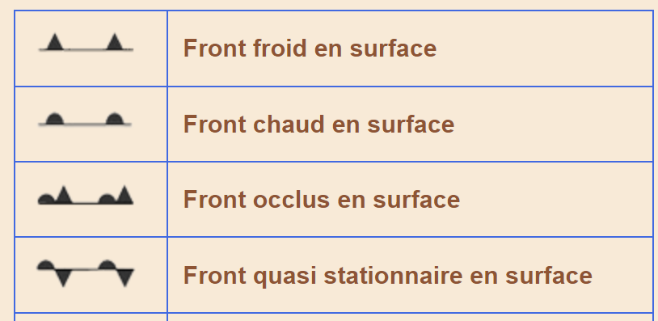

Acronymes / abréviations
Above Mean Sea Level (AMSL)
Aeronautical Information Publication (AIP)
Activation des zones basses altitudes (AZBA)
CTA (Control Traffic area)
Control Traffic Region (CTR) (ConTRol zone)
FLight ALArm (FLARM) : dispositif embarqué de prevention des collisions en vol
Light UAS Operator Certificate (LUC)
METeorological Aerodrome Report / METeorological Airport Report (METAR)
Région de contrôle terminale : TMA (Terminal Area)
Région d'information de vol : FIR (Flight Information Region)
Terminal Area Forecast (TAF)
Temporary Segregated Area (TSA)
Voie aérienne : AWY (Airway)
C!8e@k6B
Drone
Généralités
Aérostat : UAS plus léger que l'air
Aérodyne : forces aérodynamiques
Masse maximale structurale : définie par constructeur. Au dela risque de dépasser limite élastique. Dommage irémédiable - interdiction
Alimentation charge utile peut etre la même que celle des moteurs
h=1/2.g.t² --> loi de Galilée
Electricité
1A = 1 Coulomb par seconde
La tension nominale est de 3.7v (celle qu'on utilisera dans les questions), chargée = 4.2v.
Batterie lithium : forte capacité à chauffé voir a prendre feu si endommagée
Vérification de l'état d'une batterie avec un voltmètre --> une charge sera connectée à la batterie pour obtenir une information plus précise de son état.
Une batterie est presque complètement déchargée --> la tension décroît sous l'effet de la charge.
Tension entre cellule ne doit pas dépasser 0,1V !
Brushless : un rotor avec aimants permanents et un stator electroaimants.
Le rendement d'un moteur = Poussée (thrust) / Puissance.
ESC synchronise l'alimentation des electroaimants en fonction de l'azimuth du moteur
Le contrôleur des commandes de vol (esc..) se situe entre l'émetteur/récepteur principal et le contrôleur moteur.
Instrumentation / Capteurs
Altimètre barométrique (capsule anéroide) mesure pression statique (ou absolue), utilisée pour mesurer de faibles pressions.
Compare pression de calage (pression au décolage), appellée calage QFE avec la pression en altitude selon la loi d'équilibre verticale de l'atmosphère.
La loi défini une perte de pression de 1hPa/28ft ou 8m (1 ft = 0,305m) dans une atmosphère type qui est égal à 1013.25hPa au niveau mer à une température de 15°C.
QNE est une altitude (et non un calage) correspondant au niveau de vol en partant du niveau de la mer dans l'atmosphère type vu plus haut (1013hpa).
Le même niveau (mer) en fonction du jour (atmosphère non type) est appellé QNH (Hydro mnémotechnique).
Un système de maintient d'altitude est composé d'un altimètre et d'un capteur ultrason.
mais l'altitude est mesurée via positionnement satellite et baromètre
Above Mean Sea Level (AMSL) --> altitude avec un altimetre calé sur le QNH.
Above SurFaCe (ASFC) / Above Aerodrome Level (AAL) / Above Ground Level (AGL) --> hauteur avec un altimetre calé sur le QFE.
Calage altimétrique : sur altimétre barométrique. QFE pour que l'altimétre indique 0 au niveau aérodrome.
QNH calage pour que altimetre indique altitude de l'aérodrome.
Calage 1013.25 altimetre indique altitude pression Zp (atmosphére type pression ambiante)
Dans un UAS le baromètre piézoélectrique indique la hauteur de vol (en fonction d'une pression mesurée au décollage)
Anémométre : mesure vitesse vol (qui est différente vitesse sol).
attention question piège : au sol c'est la manche a air qui donne la vitesse du vent (et pas l'anémomètre..)
1 noeud = 1 mile nautique par heure (1,852 km/h), 1 mille terrestre (stature mile) = 1.609km.
IMU = accéléromètre + gyromètre
Pour obtenir la position instantanée à partir des accélérations: Il faut intégrer deux fois l'accélération par rapport au temps, et connaitre la position initiale et la vitesse initiale.
Accéléromètre : composé de 3 ensembles masse-ressort. Permet la mesure sur chacun des 3 axes de l'UAS
Dans un système de navigation inertiel, l'intégration simple de la vitesse permet d'obtenir: La distance parcourue.
Magnétomètre : système mesure des composantes du champ magnétique dans les 3 axes.
Magnétomètre + gyromètre (mesure vitesse rotation) permettent la mesure d'une attitude précise.
Le compas magnétique + carte isogones permet la déduction du cap vrai.
Compas magnétique : donne une reference de direction vis à vis du nord magnétique (+/- déviation compas)
attention aux sources d'erreurs lors des accélérations, virage, et masse ferreuse à proximité, courants continus .
Calibration necessaire avant chaque mission pour tenir compte de l'environement magnétique et du lieu
Gyroscope : mesure référence d'orientation par rapport à la terre après calage initial et recalage périodique.
Sa caractéristique principale est sa fixité dans l'espace
lorsqu'un couple est appliqué à l'appareil il provoque une precession (chgt graduel d'orientation de l'axe de rotation) ou une nutation (mvt périodique de l'axe de rotation qui s'ajoute à la precession)
Compas gyromagnétique (présent sur de très gros drones) comporte un gyroscope à axes horizontal (doté d'un système érecteur pour maintenir son axe horizontal), d'un détecteur de champ magnétique terrestre, d'un moteur couple de recalage en azimut.
Le système de positionnement et de navigation utilisera principalement un système GNSS et un magnétomètre
Dispositif limitateur de hauteur et de zone : software couplé baromètre et GPS.
Intégrité système : capacité a informer en situation dégradée.
Transmission données
Ondes radioelectriques ou hertziennes : onde electromatique dont fréquence est inférieur à 300ghz (convention), propage à la vitesse de la lumière.
Attention obstacles : atténuation, absorbption, reflexion, diffraction, réfraction (ionosphère, Troposphère), multi-trajets.
diffraction : l'onde radio parcourt et contourne les obstacles.
refraction : phénomène de changement de direction d'une onde électromagnétique en raison du changement de sa vitesse de propagation
Amplitude d'une onde électromagnétique est : La déviation maximale d'une oscillation.
Transmission donnée : la puissance reçue baisse avec la distance. Baisse aussi lorsque la fréquence augmente.
Puissance max autorisé France : 2.4Ghz--> 100mW ; 5.8Ghz --> 25 mW (le fameux *4)
Perte de liaison de commande entraine une procédure (failsage) d'attente ou la procédure d'atterrisage,maintient dernier ordre
Principes de vol
Hélice : diamètre (en pouces) et pas géométrique.
Le pas correspond à la distance parcourue en un tour si l'hélice est vissée dans un solide. Pas = 2pi*tan(Angle calage).
Angle calage entre corde du profil et plan d'entrainement (ou de rotation).
déterminé à 75% du rayon de la pale.
Diminue du moyeu à l'extrémité de l'hélice, il uniformise la portance sur la pale.
Rendement d'une hélice = Puissance utile / puissance absorbée
 Angles :
Angles :
entre l'horizontal et trajectoire (aussi appellée vent relatif) --> pente (c'est comment monte l'avion)
l'angle entre trajectoire et axe longitudinal (ou corde de profil) --> incidence.
pente + incidence = assiete : qui est l'ange entre l'axe longitudinal de l'avion et l'horizontal
incidence de l'aile : angle compris entre : La corde de profil de l'aile et le vent relatif.
Pour un aéronef à voilure fixe lorsque la vitesse augmente --> l'efficacité des gouvernes augmente
Centrage : centre de gravité avant rend avion plus stable mais moins maniable. Inverse pour arrière.
Portance / trainée
A incidence constante, on augmente la vitesse sur un profil (aile d'avion ou pale d'un rotor) : la portance et la traînée augmentent.
Portance : force résultante exercée par un écoulement autours d'un objet qui est perpendiculaire au vent relatif/vitesse-air.
Portance = 1/2p(masse vol)*S(surface alaire) *V²Cz ; trainée = 1/2p*SV²Cx et donc la portance généré par une pale dépend de :
- la masse volumique de l'air - la vitesse du vent relatif - la surface alaire - l'incidence de la pale - la forme du profil de pale
On influe sur la portance et trainée avec la vitesse de deplacement dans l'air et l'incidence de vol.
Pour un aéronef à voilure fixe (type 'avion'), dans le domaine de vol habituel, les hautes vitesses correspondent : aux petits angles d'incidence (et inversement : basses vitesses - grand angles d'incidence).
pour passer de la ligne droite au virage en restant en palier, la portance doit : Augmenter.
Théorie de Froude : modèle entre portance du rotor et puissance a fournir en f(surface disque rotor & masse volumique air).
De cette loi si +++ de surface et/ou air à une masse volumique +++ --> --- besoin de fournir de puissance.
Facteur de charge = portance / poids ; lors d'un virage facteur charge augmente, devient supérieur à 1, en monté et descente il est inférieur à 1.
Finesse & portance. Finesse = distance parcourue / hauteur perdue. Finesse = portance/trainée.
Décrochage : diminution brutale portance. Celui-ci est fonction de l'incidence de décrochage.
Décrochage dissymétrique, dérapage (entraine une autorotation ou vrille dans les questions) est du à un mauvais controle de la symétrie du vol associé à une forte incidence
Pour un aéronef à voilure fixe (type 'avion' ou 'planeur'), lorsque le facteur de charge augmente : La vitesse de décrochage augmente (attention c'est contre intuitif mais c'est vrai), mais l'incidence de décrochage ne change pas.
Pression / ecoulement fluides
Loi de bernouilli --> 1/2*masse volumique*V².
Effet venturi --> la réduction de section d'un tube augmente la vitesse d'écoulement
Force de pression (P) --> force (F) exercée par un fluide perpendiculairement à une surface (S). P=F/S
Force de viscosité : force excercée parrallelement à la surface
Ecoulement : fluide en mouvement autours d'un obstacle, laminaire Ok, turbulent NOk.
Vitesse-air : vitesse de déplacement de l'objet par rapport à la masse d'air non perturbé loin devant (appellée infini amont)
Vent relatif : vitesse ecoulement infini amont par rapport à l'objet. Vitesse-air et vent relatif sont 2 vecteurs égaux et opposés
Sur un profil d'aile, la résultante aérodynamique (addition vectorielle portance et trainé) est générée à 75% par la dépression sur l'extrados.
Météorologie
Prévisions, bulletins, cartes
METAR --> observation régulière pour l'aviation diffusé toutes les heures ou toutes les demi-heures pour les gros aéroports.
 Le METAR peut contenir une partie de prévision TEMPO (temporairement) --> tendance de prévision d'atterrissage valable pour les deux heures qui suivent l'observation.
Les informations de vitesse moyenne du vent mesurées transmises dans les TAF, METAR et SPECI, sont effectuées depuis l'anémomètre d'un aérodrome installé : Sur un mât d'une hauteur de 8 à 10 mètres au-dessus du sol.
Le METAR peut contenir une partie de prévision TEMPO (temporairement) --> tendance de prévision d'atterrissage valable pour les deux heures qui suivent l'observation.
Les informations de vitesse moyenne du vent mesurées transmises dans les TAF, METAR et SPECI, sont effectuées depuis l'anémomètre d'un aérodrome installé : Sur un mât d'une hauteur de 8 à 10 mètres au-dessus du sol.
TAF (prevision) court : tous les 3h valable 9h ; TAF long tous les 6h valable 24h ou 30h
Symboles TEMSI (TEMps SIgnificatif)
 
Phénomènes
Nuages
Nuage : condensation vapeur d'eau. Stratiforme (stable) vs cumuliforme (instable).
Etage inférieur (inf 2km) stratus et stratocumulus. Etage moyen (2-7km) nimbostratus, altostratus cumulus et altocumulus.
Etage supérieur cirrus. Cumulonimbus grande extension de l'étage inférieur à supérieur.
Sous nuage stratiforme (stratus et tous ceux qui ont strat...) on rencontre de la pluie en continue, pas de turbulence, ni de rafales ou averses.
nimbostratus : pluie forte et continue car plus haut et epais, altostratus pluie passagère
Présence d'une couverture nuageuse diminue l'amplitude thermique diurne
Nuage lenticulaire (1) associé à une onde relief ;
(3) un nuage à caractère de nuage lenticulaire mais mélangé à des nuages de types stratus ou altocumulus
 1 cumulonimbus - 2 stratus accrochés au relief - 3 cirrostratus - 4 altocumulus lenticularis (un altocumulus qu’on retrouve en aval du sommet des montagnes sous le vent).
1 cumulonimbus - 2 stratus accrochés au relief - 3 cirrostratus - 4 altocumulus lenticularis (un altocumulus qu’on retrouve en aval du sommet des montagnes sous le vent).
 Brume : visibilité horizontale 1 à 5km.
Brume : visibilité horizontale 1 à 5km.
Brouillard rayonnement (+ courant) se forme avec forte humidité et faible vent (marais barométrique)
brouillard d'advection lorsque qu'une masse humide recontre une surface froide
brouillard pente lors d'un refroidissement d'une masse humide
brouillard d'evaporation : se forme après un orage - si air froid rencontre une surface chaude
Vents et atmosphère
Pression atmosphérique : poids de la colonne d'air par unité de surface.
Pression décroit avec altitude et poids de la colonne diminue.
Les lignes de memes pressions sont les isobares.
Centre haute pression est un anticyclone
Centre basse pression une depression
Axe hautes pressions est une dorsale
Axe basse pressions un thalweg
Zone faible variation est un marais barométrique.
Vent : composante horizontale du vecteur-vitesse air
Exprimé en ° par rapport au nord vrai, en m/s ou noeud (kt).
Pour passer des m/s au noeud on multiplie par 2 (5m/s --> 10kt)
Vent/isobare : en altitude le vent est // aux isobares, +++ isobares resserés +++ vent fort.
Le frottement à basse altitude (+ important sur terre que sur mer) provoque convergence du vent au centre de la depression, et la divergence au centre de l'anticyclone.
Gradient de vent --> force augmente en s'éloigant de la surface.
Turbulence convective : généré par convection, saturation air (selon degré humidité et amplitude verticale). Instabilités dues à la formation de cumulus et cumulonimbus
La turbulence thermique dépend :- de l'environnement - des contrastes du sol - du degré d'instabilité de l'air
Rayonnement : transport chaleur via spectre (infrarouge<->ultraviolet) jusqu'à atmosphère. Partie absorbée, partie réfléchie. Variation en fonction des couches et des zones géographiques. Ces contrastes déclenchent des mécanismes compensatoires (phénomènes météo)
Convection : transport E thermique par brassage vertical (pousée archimède)
Convection qui peut etre matérialisée par des nuages cumulus ou cumulonimbus, un ciel clair en été l'aprés-midi et a la turbulance de reliefs (ascendants, rabattans, tourbillons, cisaillement de vent).
Conduction : transport E corps plus chaud vers corps plus froid
Troposphère : partie inf atmosphère, dans cette couche la t° dimininue d'un gradient moyen de 6.5°C par 1000m (jusqu'à 11000m) ou 2° par 1000ft. Plus haut la couche d'inversion où t° augmente avec altitude
La diminution de la pression est plus importante dans les basses couches qu'en altitude (moyenne de 1hPa/28ft)
Climats
Durée de vie d'une perturbation océanique : 3 à 6jours, déplacement à 25noeuds environ
Dans l'hémisphère nord le vent tourne dans le sens anti-horaire autour de la dépression et en sens horaire autour de l’anticyclone (inverse pour l'hémisphère sud)
Dans les latitudes tempérées de l'hémisphère Nord, les vents dominants proviennent généralement : de l'ouest
Les conditions météorologiques rencontrées dans une zone de hautes pressions stationnaires sont généralement : vents calmes et brume
Tramontane est un vent nord-ouest
Brise : vent local de contrast thermique. De jour de la cote vers la terre, inverse la nuit. Brise ascendante vers les vallées et cols le jour, inverse (descendante) la nuit.
Brise de mer : due à une diminution de pression au-dessus de la terre.
Brise de mer hivernale qui se lève le matin sur la côte va créer des stratus bas et du brouillard sur les terres (masse d'eau sur terre froide).
Perturbation : interaction conflictuelle de 2 masses d'air (front froid ou chaud).
Arrivé d'un front froid : annonce l'arrivée de la traîne. Le ciel de traine est caractérisé par un temps instable où alternent les grains et les éclaircies.
Si vent négligeable --> front stationnaire.
Si masse d'air se souleve --> instable, formation cumulonimbus
En été, le temps associé à un anticyclone est caractérisé par : des nuits claires et des journées sans nuages ou avec des petits cumulus.
Les ascendances thermiques se produisent par réchauffement du sol.
Un orage orographique se développe en zone montagneuse ou sur un relief.
Une onde de ressaut est aussi appelée onde stationnaire ou onde orographique.
Foehn (effet de) : refroidissement d’une masse d’air par ascendance forcée avec précipitations au vent du relief, puis phénomène de réchauffement et d’assèchement sous le vent.
Un trou de foehn est caractérisé par : une zone de ciel clair au relief sous le vent.
Navigation
Terre, latitude, méridens
Position drone : coordonée en fonction de la surface de la terre --> lattitude, longitude et altitude
Ellipsoïde de référence (WGS84) : forme géométrique conventionnelle où la surface de la terre est projettée.
Pôles : extrémités de l'axe de symétrie de l'ellipsoide de référence
Equateur : intersection entre ellipsoide et plan de symétrie perpendiculaire à l'ellipsoide
Méridiens : lignes d'intersections entre ellipsoide et demi-plan issu de l'axe des pôles
graduées de 0 à 180 vers l'est ou vers l'ouest à partir du méridien de Greenwich (origine).
Parallèles : intersections entre ellipsoide et plans parallèles à l'équateur
Coordonnées géographiques : permet de repérer un point sur l'ellispoïde avec ses coordonées.
La lattitude est l'angle en fonction du plan equatorial --> N ou S selon l'hémisphère
la longitude est un angle en fonction du plan meridien origine --> E ou W (positive ou négative)
altitude en fonction du niveau de la mer.
Sur un méridien (360°) chaque ° équivaut à 60NM équivaut à 60minutes, Entre 43°30N et 44°N, nous avons 0,5°, soit 30 minutes d'angle, c'est à dire 30 NM.
et donc une minute d'arc de méridien correspond à 1.852km
Temps (UTC) : 12h UTC --> soleil moyen passe au méridien de greenwich.
Le temps civil local LMT ou Tcg est UTC + décalage constant, tel qu'à 12h LMT le soleil moyen passe au méridien du lieu.
Le temps légal est défini par rapport au temps UTC en ajoutant/retranchant une valeur d'heure(s)
En été : UTC +2h. En hiver : UTC +1h.
Cartes
L'espace couvert par la carte 1/500 000 IGN OACI-VFR s'étend : jusqu’au FL115 ou 3000 ft ASFC (le plus haut des deux).
1/10000000 --> courbes convergentes, 1/500000 --> droite convergentes, 1/250000 --> droites parrallèle
Projection representation surface terrestre sur plan.
Si échelle quasi constante dans une zone donnée on dit que la projection est équidistante. Une projection conforme conserve les angles.
Les cartes de navigations sont conformes et equidistantes
Carte Lambert (souvent utilisé à nos lattitudes car bonne approximitation) : projection conforme ou les méridiens sont sécants au pôle et parallèles sont concentriques au pôle.
Pour mesurer des routes et des distances il faut une carte conforme.
La route vraie est égale à l'angle entre la trajectoire de l'appareil et le méridien sécant à la trajectoire.
Pour mesurer la distance on rapportera distance entre 2 points sur le méridien autour de la meme latitude moyenne.
Une regle, ou un compas pointe seche permet de reporter cette mesure et de lire le resultats en minutes de latitude soit en mille nautique.
Carte OACI
carte de type conique conforme (carte OACI 1/500 000) la direction d'un méridien donne la direction : du nord vrai.
OACI IGN au 1/500 000, un point rouge entouré d'un cercle (rouge) représente un parc ou une réserve naturelle de petite taille.
Attention avec un carré rouge represente une installation portant une marque distinctive ou une centrale nucléaire.
Carte de restriction pour la catégorie ouvert et l'aéromodélisme est élaborée par la DGAC et l'IGN et disponible sur géoportail.gouv
Pour connaître les heures d'activité de la zone réglementée voir le complément aux cartes aéronautiques de vol à vue.
Les obstacles, chiffre entre paranthèse : hauteur en pied ASFC, chiffre en haut : alitude du sommet par rapport au niveau moyen de la mer
Carte VAC
DA : C’est la distance de l’aéronef à la droite support de l’axe de piste
DC : C’est la distance de l’aéronef au centre de l’aire d’approche finale et de décollage (le centre de l’hélistation).
Zone controlée au sol : UAS est exploité dans cette zone et l'exploitant garanti que seul les participants sont présents.
Longeur des pistes revetues sur les cartes VAC en m
Sur une carte d'approche à vue (VAC), les directions et les distances des aérodromes voisins sont donnée par : cap magnétique et en NM
GNSS
Un GPS fournit les informations suivantes : X,Y,Z + vitesse sol + un temps précis.
Chaque satellite transmet deux types de message : l’almanach et les éphémérides.
L’almanach consiste en une information générale sur la localisation et la santé du satellite dans la constellation.
Les éphémérides, quant à elles consistent en une information précise de la position du satellite utilisée pour faire les mesures de calcul des distances.
La durée de la révolution d'un satellite NAVSTAR/GPS est de : 12 heures
Quel type d'horloge est utilisée dans les satellites NAVSTAR GPS : Atomique.
Les informations transmises par les satellites NAVSTAR/GPS sont :
- le décalage d'horloge par rapport à l'heure UTC - les éphémérides - l'état du système - le retard ionosphérique
Navstar / GPS, au moins 24 sattelites (full operationnal capability = 24), 6 orbites ; 20200 km d'altitude.
Font des mesures de temps entre sattelites (4 visibles minimums, 6 minimums, 8 recommandés) et cible pour déterminer x,y,z --> latitude, longitude, altitude et calage horloge du recepteur.
Attention reflexions ondes, obstacles, etc. Attention angle de masque (sattelites trop bas sur orbite).
la liste des erreurs affectant les performances d'un système de navigation assisté par satellite (GNSS/GPS) :
Erreur d'horloge, erreur d'éphéméride, erreur de propagation atmosphérique.
lattitude max des ellipses sont comprises entre les parallèles 55N et 55S pour assurer une couverture mondiale
plan orbital inclinée de 55° par rapport à l'équateur.
Chaque satellite transmet son signal, sur des fréquences communes, avec un code PRN ('Pseudo Random Noise' ou bruit pseudo-aléatoire) qui lui est propre.
La distance entre un satellite NAVSTAR/GPS et un recepteur GPS est déterminée en multipliant le temps mis par le signal pour aller du satellite au récepteur, par la vitesse de la lumière.
Real Time Kinematic (RTK) : ajout base sol qui connait sa position pour en déduire l'erreur et la difuser au drone : utile pour topographie...
la mesure est appellé pseudo distance car la distance calculée inclut une erreur d'horloge du récepteur.
Concernant le système de localisation NAVSTAR-GPS, le mode 'Search the Sky' est :
Une procédure qui débute après la mise en marche du récepteur, s'il n'y a pas de donnée relative aux satellites stockée en mémoire.
La dénomination 'way point' sur un GPS sert à : repérer un point de report existant déjà dans la base de données créée par l'utilisateur.
BRG (bearing) : route GPS à suivre pour rejoindre un point tournant (way-point)
TRK (Track) : route GPS suivie
ETE : temps pour arriver au prochain point tournant
QDM : radial (angle) moi vers la station
QDR : radial navigation Station vers moi
Décimal sont : 43°30,5'N - 002°24,25'E. converti en sexadécimal : 43°30'30' N - 002°24'15' E.
En employant le GPS, l'information de position primaire est dans la forme de : Sphères, avec les satellites dans le centre des sphères.
Les données de l'almanach stocké dans le récepteur du système de navigation NAVSTAR/GPS sont utilisées pour : L'identification rapide des signaux reçus provenant des satellites visibles.
un récepteur du système de navigation par satellite GPS, détermine le site et l'azimut d'un satellite par rapport à la position de l'antenne en exploitant les données de l'almanach émit par les satellites
Les erreurs d'orbites des satellites GPS sont dues : Au vent solaire et à la gravité du soleil, de la lune et des planètes.
Quels sont les effets, s'il y en a, du masquage par l'un des éléments de l'aéronef télépiloté (une caméra embarquée par exemple), de la réception des signaux des satellites NAVSTAR/GPS : Cela peut empêcher la réception du signal
Quel délai faut-il à un récepteur GPS pour obtenir la meilleure qualité de signal : 10 minutes maximum
Les fréquences L1 et L2 utilisées par le système de navigation par satellite NAVSTAR/GPS pour la transmission du message de navigation : UHF
Dans un GPS NAVSTAR :
fonction du segment spatial (ensemble des sattelites) transmet un signal utilisé par un récepteur adapté à calculer le temps, la position et la vitesse.
fonction du segment controle assure et controle que les données transmises par les satellites sont mises à jour de temps en temps par les stations sol
Une station de contrôle maître, des stations de surveillances et des antennes sol.
segment utilisateur (récepteur) selectionne les satellites appropriés automatiquement, suit les signaux et mesure le temps mis par les signaux des satellites pour atteindre le récepteur.
La valeur de DOP (Dilution Of Precision) est fonction de : La géométrie et du nombre de satellites en vue.
L'utilisation optimale d'un récepteur GPS est perturbée par : - la panne d'horloge d'un ou de plusieurs satellites - l'absence d'antenne déportée ou extérieure
question batarde
Le GPS (Global Positioning System) est un système de navigation par satellite qui peut vous donner une position. Le GPS : vous renseigne en tout point de la surface du globe sous réserve de réceptionner au moins 3 satellites.
Magnétisme / Nord / Cap
NV (vrai) tangeant au méridien d'origine
NM direction boussolle si horizontal
NC (compas) compas de l'aéronef subissant les perturbartions magnétiques et imperfections instrumentales.
Déclinaison magnétique (DM) : angle entre le nord vrai (NV) et NM.
Les DM varient en lieu et temps.
Les isogones sont des tracés / lignes d'égales déclinaisons sur une carte.
Déviation compas : angle entre NM et NC
Variation compas : angle entre NC et NV. Varition compas = deviation compas + déclinaison magnétique.
Cap : angle entre direction et axe aéronef (aussi appellé ligne de foi).
Route : angle direction origine vers trajectoire aéronef. De 0 à 360° dans le sens horaire.
Si direction origine est Nv ou Nm la route et route vraie ou route magnétique.
Dérive : angle entre axe aéronef et route. Positive si route est à droite, negative si route à gauche de l'axe.
La dérive est maximale si le vent est : perpendiculaire à la trajectoire de notre aéronef
Attitude : angles en fonction de la surface de la terre :
Assiete --> angle entre axe longitudinal et plan horizontal
Inclinaison--> angle entre axe latéral et plan horizontal
Cap-->angle entre projection horizontal de l'axe longitudinal et nord.
Se repérer
Cheminement : technique de reconaissance naturelle et facile pour naviguer en suivant une particularité géographique naturelle ou artificielle (fleuve, chemin de fer, etc.) à faire sur tout ou une partie du trajet.
Estime : technique base navigation peut importe sophistication moyen technique. En partant d'un point donné, avec une trajectoire et vitesse-sol donnée on determine sa position. Faire l'inverse pour conaitre le temps en f(vitesse).
Avec un chronomètre déclenché au depart, le temps arrivée prévue se rapprochant--> trouver/reconnaitre le point au sol correspondant.
Le vent impacte le cap et vitesse propre (projection vitesse-air sur plan horizontal) par rapport à la route et à la vitesse sol.
Le triangle des vitesses "vitesse sol = vitesse propre + vent" permet de calculer le cap à prendre pour suivre la route prévue et donne la vitesse-sol correspondante.
La fonction traceur permet de calculer par echantillonage la position d'un UAS au cours du temps.
La dérivée 1 et 2 de cette position permet d'obtenir vitesse et accélération qui sont sensibles aux données initiales de positionnement du GNSS.
En saisissant les points de reports successifs le calculateur donne la distance orthodromique, la route sur chaque segment de naviation et résou le triangle des vitesse selon vent prévu et donc indique un temps de vol et une durée de trajet.
Procédure opérationnelle
Procédure à mettre en place
Le but des projets d'action qui s'instaurent pendant les briefings est : d'initier les procédures et réactions pour les situations les plus probables, risquées ou difficiles pendant le vol.
Analyse de sécurité obligatoire pour vol hors scénario. Permet d'évaluer les risques et mesures de réductions, permet de définir si niveau sécurité est acceptable.
Q comprends pas ... Une analyse de sécurité doit être effectuée si on envisage : le survol de tiers en dehors des agglomérations et à distance des rassemblements de personnes, pour des aéronefs de moins de 2 kg.
Protection des personnes et des biens : mesures préventives (hauteur max pour ségregation, distance horizontale, survol personne, dispositif technique de protection, etc.)
Protection tiers au sol : mesures préventives autour zone évolution = rayon minimal sécurité autour UAS, bande sécurité autour zone d'évolution.
Performance et limitations : actions et vérification si vol compatible avec les performances et limitation UAS --> masse max structurale, centrage, atltitude, température zone d'évolution, compatibilité energie embarquée pour temps de vol mission
Procédures d'urgence doivent etre connues et tenues en cas de situation dégragée
Vol en immersion (plusieurs télépilotes) : télépilote en vue de l'UAS est responsable sécurité du vol.
Procédures d'utilisation d'urgence :
Dans le cas d'un vol en scénario S-1, si le télépilote a préalablement tenté de retrouver une situation de vol normale, et qu'il n'arrive plus a maintenir les limites de vol prévues, il doit : Interrompre le vol par coupure des moteurs.
Lors d'un vol programmé le drone sort de son plan de vol sans explication, vous devez : Forcer un atterrissage d'urgence.
Documents à fournir
Navigabilité : ensemble de règles et critères de l'aptitude au vol d'un UAS.
Dossier d'utilisation = manuel d'utilisation + manuel d'entretien. Documentation obligatoire à l'attestation de conception
Documentation technique décrit l'appareil, ses limites, les procédures normales et d'urgences ainsi que l'entretien. L'exploitant établi les procédure en accord avec les particularités d'exploitation
Dossier de vol
Restrictions liées à l'espace aérien : analyse de la carte OACI (1/500000 ou 1/250000) et VAC pour confirmer vol compatible avec réglementation UAS.
Site du SIA --> AIP ENR 2 et AD2 où sont décrit les espaces aériens contrôles et AIP ENR 5 dévrivants les établissements portant des marques d'interdiction de survol,
les zones et activités de nature dangereuse, les obstacles, les activités aériennes sportives, les parcs nationaux et reserves naturelles.
Il faut aussi consulter dans la rubrique MIL AIP les parties ENR5.2.6 à ENR 5.2.10 et ENR 5.2.13 du MIAM.
Dossier météo : recueil d'information pour définir si mission peut etre assurée.
Vent compatible avec l'appareil ? Brouillard absent de la zone d'évolution. Orages ! ; pluies si drone pas étanche.
Les qualités d'un bon briefing sont: basé sur un modèle standard pour pouvoir être réutilisé lors d'autres missions - concis et précis - compréhensible pour tous les intervenants
Questions à la con
En mode de pilotage GPS stabilisé (stabilisé en position GPS), votre drone s'écarte de la trajectoire désirée. Votre action est : Reprise du pilotage en mode manuel stabilisé en attitude.
Vous constatez visuellement des différences entre la position de votre drone et les données affichées sur votre interface de gestion et suivi du vol : Vous interrompez le vol, la continuité et la sécurité des évolutions n'est plus assurée.
Suivi et gestion de la navigation en vol. L'interface de suivi et gestion de la navigation en vol doit, de préférence, disposer : d'un système d'alarme pour attirer l'attention de l'opérateur en cas d'évènement imprévu.
En zone peuplée, vous faites évoluer un aéronef télépiloté dont la masse est 4 kg. La hauteur du vol ne dépassera pas 20 mètres. La vitesse horizontale maximale sera de 3m/s. Le rayon de sécurité minimal autour de l'aéronef télépiloté est : 10m
Préparation et suivi de vol
Routine :
avant vol : choix des cartes --> consultation AIP et des NOTAM (site SIA) --> tracé route, evitement zones peuplées --> recenser espaces aériens traversés (controlés ? zones P, R, D) --> choix points de repère
--> Dossier météorologique (cartes TEMSI, cartes de vent, METAR et TAF)
--> Choix hauteur vol en accord avec les zones, le scénario, la réglementation
--> Redaction du log de navigation (points de repère, route, distance, cap, temps)
--> Réserve E et charge utile prévu / masse décollage qui est inférieur à la masse max structurale et masse max du scénario.Vérifier les limites de centrage à respecter.
-->Briefing : doc de vol ? check list decollage (prévue au MAP ou MANEX).
Pendant vol : actualisation météorologie (visibilité, vent, precipiration...), actualisation navigation (points de repère, heure passage, energie restante...), hauteur de vol (lieu, scénario), procédure d'urgence (MAP ou MANEX)
Après vol : check-list du MAP ou MANEX, debriefing, maintenance (manuel d'entretien)
Dossier météo
metar : « 34004KT 300V020 » qui signifie une vent du 340° pour 4 kt, variable entre 300° et 020°.
LFOT 060900Z 28008KT 9999 BKN016 19/15 Q1015= : c'est un métar et pas un taf car il observe la température et le QNH (la pression atmosphérique mesurée au terrain). Message fait à 9h UTC le 6 du mois
Rafales indiquées dans metar quand supérieur d'au moins 10kt au vent normal
CAVOK Ceiling and Visibility OK (Ciel et visibilité OK) mais attention possibilité de vent fort : Visibilité 10 km ou plus, pas de nuage en dessous de 5000 ft/sol.
Dans un metar ou taf :
visibilité dominante de 8000 m et minimale de 3000 m dans le Sud-Ouest avec de la brume : 8000 3000SW BR
NSC : No Significative Cloud (pas de nuages significatifs).
NSW : No Significant Weather (pas de temps significatif).
RETS : orages (TS) recents (RE)
BECMG (Becoming, Devenant)
VC : au voisinage
Cartes
liste des zones interdites photos.. défini par arrêté
L'un des seuils de piste en dur porte le numéro 20 (orienté entre 195 et 204 magnétique). L'autre seuil porte le numéro : 02 (car -180 soit 015 à 024 nord magnétique).
on indique l'orientation magnétique arrondie à la dizaine la plus proche. une piste orientée entre 355° et 004° = piste 36.
Pour utiliser votre drone à partir d'une plate-forme destinée à être utilisée par des aéronefs ultralégers motorisés (ULM) : Il faut l'accord préalable de la personne en ayant la jouissance.
MANEX
Le manuel d'exploitation précise notamment : - la liste des télépilotes autorisés - les procédures générales de mise en oeuvre des aéronefs - une description des activités
Performance humaine
Vision
Vision périphérique ouverture horizontale max de 200° et verticale de 130°
Les cellules de l'oeil qui permettent la vision de nuit (vision periphérique, mouvement) sont : les batonnets.
Les cones pour la couleur (vision jour + vision centrale) (co=co).
Myopie : problème vision de loin, image se forme en avant de la rétine.
10s pour s'habituer à la lumière, 30mins à la nuit
le meilleur moyen de percevoir le plus possible de couleurs --> De la lumière en quantité (rayons du soleil par exemple).
Stress, charge mentale
Compréhension : cohérence monde extérieur, 3 outils : connaissances, les régles et les schémas.
Prise decision / jugemement : comprend recherche d'informations utile, analyse situation,
confrontation savoir faire et temps dispo
evaluation des conséquence
choix et passage à l'acte. risque externe que les evenements ne se déroulent pas comme prévu et interne d'échec de la solution choisie.
certains traits de perso : resigné, antiautoritaire, invulnerable, impulsif, macho sont associés à des prise de risque dangereuse
Un facteur de stress : un stimulus externe ou interne...
La réaction de stress est : la réponse non spécifique du corps à chaque exigence appliquée à une personne.
Gestion ressources mentales : régulation utilise 3 moyens essentiels : anticipation et planification des actions, hierarchisation des actions, expertise.
Risque d'altération : état psychique et mental, mauvaise visibilité extérieure, surcharge d'actions a effectuer.
Attention : respecter un circuit visuel passant par les différents instruments et surveillance extérieure
Vigilance : état activation système nerveux central
L'analyse des accidents impliquant le facteur humain dans le télépilotage montre que : Il n'y a pratiquement jamais de cause unique.
Erreur : supprimer erreurs est illusoire, il faut les prévenir : drones et procédures robustes, reconnaissance de son potentiel, detections des erreurs.
erreur de routine --> concerne action effectuée réguliérement
erreur de règle --> application procédure inapropriée (mauvais diagnostic ou raisonnement, mauvaise execution de la bonne procédure.
erreur de modèle --> utiliser un modèle inadequate à la situation.
erreur de representation -->interpretation erronnée de la situation.
une erreur active --> Produite par l'opérateur et peut être rapidement détectée par l'intermédiaire des effets et conséquences qui sont induites sur toutes les actions.
Les symptômes de stress comprennent : transpiration, bouche sèche, pupilles dilatées, respiration rapide.
(U inversé) Une motivation excessive conduit à un niveau de stress qui affecte négativement la performance.
Attention dispersée : diviser l'attention et faire presque 2 choses en mm temps
Les ressources cognitives disponibles du cerveau humain: sont limitées et rendent impossible la réalisation simultanée de deux taches qui requièrent de l'attention.
Un mécanisme d'attention sélective est nécessaire : à cause de la capacité limitée du système de décision centrale et de la mémoire de travail.
Mémoire
Mémoire court terme (ou fonctionnelle) : 7 +/- 2 items
La mémoire dite 'à long terme' est : Quasi illimitée en capacité, mais plus lente à restituer les informations, avec souvent un besoin de stimuli.
IHM
Homme mieux que machine : qualitatif, detection de conditions inhabituelles, creativité, adaptabilité, innovation
Mode de vie
Hygiène de vie : ensemble précautions a prendre pour préserver capital santé. 0.3g/l alcool capacité mentales dégradées. Pratique activité physique, hygiène alimentaire.
L'alcool dégrade le sommeil paradoxal
Le décalage horaire (ou syndrome du jet-lag) se manifeste par : - Fatigue importante - Troubles de l'éveil, de l'humeur et des performances - Perturbations du sommeil.
jetlagrythmes bio se resynchronise d'environ 1 - 1.5h par jour
La prise de médicament peut-être contre-indiquée dans l'activité de télépilotage : à cause des effets primaires et secondaires.
5 phases de sommeil (endormissement, léger, lent, profond, paradoxal).
Signes précurseurs hypoxie : - Somnolence - Maux de tête - Augmentation du rythme cardiaque
Questions bizarres
Quelles sont les principales stratégies pour s'adapter aux contraintes temporelles : la préparation des actions et le classement des tâches par ordre de priorité.
Une augmentation de la charge de travail conduit généralement à : une diminution de la durée et de la fréquence des échanges d'information.
Communication
Radio
Règle générale : Un nombre est transmis par énonciation de chacun des chiffres qui le composent.
La règle générale indique également que lors de la transmission de la piste, le chiffre zéro est énoncé avant la valeur de la piste, si cette valeur est inférieure à dix.
La France, par l'intermédiaire de la DGAC, a notifié une différence auprès de l'OACI : Lorsqu'il n'y pas de risque de confusion, un nombre peut être transmis comme on l'énonce dans la vie courante.
Pour communiquer c'est l'heure UTC qui est transmise
Transmission de l'heure : En langue française et anglaise
lors de la transmission de l'heure, s'il n'y a pas de risque de confusion : seules les minutes sont transmises.
S'il y a risque de confusion (cas d'une liaison radio de mauvaise qualité), on énoncera "unité zéro zéro cinq" (UTC facultatif)
la fréquence radio 119.505 s'énonce de la façon suivante : Cent dix-neuf décimale cinq cent cinq.
La façon correcte pour transmettre le cap 100 degrés est : Cap un zéro zéro.
Pour transmettre une hauteur ou une altitude --> 3500 comme ça se prononce
L'expression radiophonique conventionnelle pour dire 'oui' est : Affirme.
Pour doubler la portée d'une transmission radio, la puissance doit être multipliée par : 4!
Echelle lisibilité radiotéléphonique : 5 : parfaitement lisible. 4 : lisible. 3 : lisible mais difficilement. 2 : lisible par instants. 1 : illisible.
Les ondes VHF (Très Haute Fréquence) apparaissent dans le spectre de fréquence suivant: 30 MHz - 300 MHz
UHF (Ultra Haute Fréquence) apparaissent dans le spectre de fréquence 300 MHz à 3000 MHz.
SHF (Supra High Frequency) –> utilisée pour la transmission vidéo (5,8 GHz)
Qu'est-ce que le phénomène de 'fading' ? Des interférences entre l'onde de sol et l'onde de ciel.
Fading : Lorsqu’un récepteur reçoit en même temps les ondes de ciel et les ondes de sol, les deux signaux vont se superposer et se soustraire, entrainant une disparition du signal.
Un opérateur doit s'assurer que les équipements radioélectriques mis en oeuvre pour l'exécution de la mission objet de l'activité particulière : N'interfèrent pas sur le bon fonctionnement des équipements radioélectriques utilisés pour le guidage.

Sécurité
INCERFA : phase d'incertitude
ALERFA : phase alerte
DETRESFA : détresse --> situation ou l aéronef est identifié comme necessitant le soutient des secours
Fréquence detresse : 121,500
Urgence : pan, pan, pan --> problème grave mais ne met pas immediatement la sécurité des occupants en doute
Détresse : mayday mayday mayday sécurité des occupants et de l'aéronefs est immédiatement mise en jeu
Aéronef est équipé d'une balise personnelle de localisation (plb), fréquence balise : 406mhz
Services
Fréquence auto information : 123,500
Le service de la circulation aérienne (ATS):
le service d'information de vol
le service d'alerte
le service consultatif de la circulation aérienne
ATIS : Automatic Terminal Information Service.
Contenu des émissions :
- état de la surface de la piste et de la plate-forme
- situation météo exceptionnelle
- direction et force du vent, visibilité, temps présent, nébulosité et base des nuages bas (ou mesure instrumentale), T, Td, QNH, QFE (aérodrome et seuil), renseignements météorologiques significatifs, changements prévus.
L'ATIS peut être consulté : Par la fréquence radio ou éventuellement par téléphone. le numéro de téléphone est publié sur la carte VAC de l'aérodrome concerné. Communication air-sol : communication bilatérale entre un aéronef et une station ou des points au sol
Le sigle SAR indique qu'il s'agit d'un service de : Search And Rescue (SAR) : recherche et sauvetage.
Les messages acheminés par le service mobile aéronautique sont :
- Messages de détresse (MAYDAY).
- Messages d'urgence (PAN PAN ou PAN PAN MEDICAL).
- Messages concernant la radiogoniométrie.
- Messages intéressant la sécurité des vols.
- Messages météorologiques.
- Message concernant la régularité des vols.
Un message météorologique diffusé par le service mobile aéronautique est un message : Qui donne des informations sur le temps présent ou à venir.
Aeroport
Branche vent arrière : section du circuit d'aérodrome ou l'aéronef s'aligne parrallèlement à la piste, a droite ou gauche de celle ci et dans le sens inverse de son atterrisage
Le point d'aboutissement sur un aérodrome, est le point : d'intersection de la piste et de la trajectoire de descente nominale d'un aéronef.
Lors d'une transmission radio, vous entendez que le QFU d'un aérodrome voisin à votre position est le '20'. Cela signifie que : La piste 20, d'une direction magnétique d'environ 200°, est en service.
Trajet spécifié que les aéronefs doivent suivre lorsqu'ils volent aux abords d'un aérodrome', cette définition correspond : Au circuit d'aérodrome.
aéronef habité s'annonçant en 'finale'. Cet aéronef : Est aligné avec l'axe de la piste, et va atterrir ou effectuer un posé-décollé.
Le pilote de l'aéronef demande un QDM au contrôleur. Cela signifie que le pilote demande : Une route à suivre pour rejoindre l'aérodrome.
Autre
Lorsque les évolutions d'un aéromodèle se situent à une distance du télépilote telle que celui-ci conserve une vue directe sur l'aéronef et une vue dégagée sur l'environnement aérien permettant de détecter tout rapprochement d'aéronef et de prévenir les collisions, on parle de vol :En vue directe.
Les limites d'une agglomération sont celles des parcelles cadastrales : Desservies par une portion de voie de circulation 'en agglomération' au sens du Code de la Route.
Une région de contrôle, ou portion de région de contrôle, présentant la forme d'un couloir, est : Une voie aérienne (airway).
Ce sont des routes aériennes suivies par les aéronefs évoluant en dessous du niveau 195 et dont le plancher varie en fonction de la géographie, mais qui n'est pas au contact du sol.
Une Airway fait généralement 10 NM de largeur (5NM de part et d'autre du trait dessiné sur la carte).
Réglementation générale
La nationalité d'un aéronef télépiloté soumis à enregistrement électronique est déterminée par : Le pays où il est enregistré.
Appareils photographiques (Article 36 de la Convention de Chicago) : interdire ou réglementer l'usage des appareils phtoro à bord des aéronefs survolant son territoire, ZICAD (sur geoportail, sur google maps la zone est floutée) zones interdites de prises de vue dans l'arrêté 1 mars 2009
L'arrêté du 2 janvier 2023 - ancien article D.133-10 du code de l'aviation civile : liste des zones interdites à la prise de vue aérienne par appareil photographique, cinématographique ou tout autre capteur
Visual Flight Rules : règles de vol à vue dans les conditions météo Visual Meteorological Condition "voir et éviter".
Instrument Flight Rules : règles de vol aux instruments dès que VMC ne sont plus respectées
La hauteur minimale de vol en aviation habitée, hormis dans le cadre d'opérations spécifiques, est de : 150m au dessus du sol et de l'eau
Reconnaissance des certificats et licences : certificats de navigabilité, brevets, licences etc seront reconnus valables par les autres états contractants
2 types de circulations : CAG (générale), CAM (militaire).
Atterir et décoller face au vent, sauf si la sécu, la config de la piste ou necessité circulation aérienne imporsent une autre direction
Priorités / abordages / sécurité
Depassement, éviter un aéronef, doubler : vers la droite.
Proximité : distance suffisante pour limiter l'abordage, à l'appréciation du pilote
Règles de l'air : régles insertion aéronefs dans l'espace aérien, définies dans réglement UE n°923/2012, SERA.
Aeronefs télépilotées dispositions spécifiques (arrété espace) sauf pour prévention collisions entre aéronefs télépilotés
Sureté : mesure previent contre actes malveillants : implique la conception et mise en oeuvre de système d'information
En cas d'accident ou incident --> cresus à la DSAC
Zones
Espace aérien : 2 étages (inférieur: en dessous 195 pieds et supérieur : au dessus 195)
La zone de niveaux de vol ]115, 195] ~ ]3400 m, 5800 m] est appelée l'espace aérien inférieur (LTA, Lower Traffic Area). C'est un espace contrôlé
Dans la réglementation, on dispose de 7 espaces différents, dont 5 sont contrôlés (A, B, C, D et E). G et F sont des espaces non contrôlés.
Classe A : reservée au IFR
Les classes B, C et D nécessitent une clairance (une autorisation), E pas necessaire mais on peut faire une demande. Cette autorisation se demande avant de pénétrer à l’intérieur de l’espace aérien.
Control Traffic Region (CTR) : espace aérien réglementé avec zone de controle terminale conçu pour rendre le service du contrôle aux aéronefs controlés.
Espace aérien contrôlé : besoin d'un accord (obligatoire) prélables si CTR militaires - ainsi que pour les autres CTR au dessus de 50m ou lorsqu'on évolue hors vue
Pour les zone de control régionale et aérodrome --> controleur aérien - CTA : empécher abordages, collision, régulariser, renseignement, alerter organisme
AFIC - ne fournit pas le service de séparation (à la différence de l'ATC): pression QNH, température, point de rosée, visibilité, information sur le trafic, alerte
Reseau Trés Basse Altitude (RTBA) ministere des armées, l'activation du réseau est consultable sur le site du SIA "carte AZBA", les limites de ces zones sont définies dans les AIP.
En dehors des créneaux d'activité du réseau RTBA, des appareils : Civils ou militaires peuvent y voler en basse altitude. La règle 'voir et éviter' s'applique alors à tous.
Zones VOLTAC et SETBA : entrainement helicopteres à trés basse altitude (mentionés dans le MIAM, DIRCAM).
Notification préalable pour les vols d'UAS (supérieur à 900g, ou hors vue tous poids) mais pas besoin d'autorisation
Sans accord aucun vol dans les 1km, a vue et 50m max en S1 et S3 entre 1km et 2.5km
Sans accord préalable, aucun vol ne peut être effectué à proximité d'une aire d'approche finale ou de décollage pour hélicoptère dans un rayon de : 1km
Zones particulières : Dangerous,Prohibited,Restricted necessite une autorisation de l'organisme gestionnaire.
Zone dangereuse (D) : espace aux dimensions définies dans lequel des activités dangeureuses pour les UAS peuvent avoir lieu pendant certaines periodes.
Interdit sauf publication contraire ou accord gestionaire. Zones consultables sur le site du SIA AIP France ENR 5.1
Temporary Segregated Area (TSA) : zone de ségrégation temporaire/
Cartes VAC (aérodrome) : approche et atterissage : vol à vue
Sanctions
Toute infraction constatée (comme p.ex. la prénétration d'une zone réglementée sans l'accord du gestionaire),
aux règles de la circulation aérienne, fait l'objet : De la rédaction d'un procès-verbal.
Amendes ou santion pénale :
1 an 75k€ utiliser un drone dans des conditions d'utilisation non conformes
1 an 45k€ si non respect vie privée
Code des transports L6211-4 zone interdite --> 6mois/1an et 15/45k€.
DGAC peut ajouter une sanction administrative : modif manex, interdire temporairement ou définitivement...
L'objectif de l'enquête sur un accident ou un incident doit être : la prévention des accidents ou des incidents.
Incident : interuption de communication p.ex.
Accident : personne mortellement ou grievement blessée
Incident grave : aurait pu y avoir un accident
Instances (OACI - DGAC - SIA)
Convention Chicago (7 decembre 1944) --> 96 article portant sur la navigation aérienne et l'OACI. Les pays contractants s'engagent a uniformiser les réglementations en f(des recommandations)
Etat conserve souveraineté au dessus de son territoire (jusqu'à 12NM à partir des côtes)
Préfet territorial compétant : police pour Paris et 13, prefet départemental dans autre cas.
Au niveau international --> OACI : organisation aviation civile internationale --> publie normes et pratiques recommandées qui determine tout ce qui concerne l'aviation (livres de bord, règles de l'air, licences, navigabilité, aéronefs en detresses, accidents...
Au niveau européen --> European union Aviation Safety Agency (EASA) : publie réglementation européene
DGAC : attachée au ministère des transports.
Regroupe DSAC, SIA, BEA, Service Navigation Aerienne (SNA), DSAE (partie militaire), DIRCAM . DSAC organisme de la DGAC en lien avec usagers
Les DSAC sont les représentations interrégionales de la DGAC
Le Service de l'Information Aéronautique (SIA) établit et diffuse : les publications aéronautiques françaises (AIP)- les informations à caractère urgent ou temporaire (NOtice To AirMen (NOTAM) et SUPpléments à l'AIP)- les circulaires d'information aéronautique (AIC)
Réglementation spécifique drone
Généralités
Commandant : télépilote drone peut décide de l'utilisation ou non de l'aéronef tant qu'il en a le commandement
Entités, Réglementations & Textes de loi
textes de lois en vigueur sur l'espace aérien :
1 - le Code des Transports 2 - Arrêté du 3 décembre 2020 relatif à l'utilisation de l'espace aérien
3 - Arrêté du 3 décembre 2020 relatif à la définition des scénarios standard nationaux 4 - le Code de l'Aviation Civile 5 - le Code Pénal
Arrété 3 décembre 2020 (réglementation sur drones) ne s'applique pas au ballons libres, ballons captifs a hauteur moins 50m et charge utile -1kg, cerf volant, aéronefs dans espaces clos et couverts
Les aéronefs sans équipage à bord utilisés dans le cadre de missions de recherche et de sauvetage, de lutte contre l’incendie, de douane, de police ou de sécurité civile ou activités analogues sous le contrôle et la responsabilité de l’Etat peuvent évoluer en dérogation aux dispositions du présent arrêté lorsque les circonstances de la mission le justifient.
L'utilisation en extérieur d'aéronef circulant sans équipage à bord est considérée comme une activité aérienne et relève de la réglementation applicable à l'aviation civile.
Autorisation d'exploitation (a demander DSAC centrale) : autorisation d’exploitation est requise si les opérations prévues sont réalisées en déviation des scénarios standards nationaux ou européens, ou en déviation aux règles applicables à ces scénarios
LUC (Light UAS Operator Certificate) est un certificat d'exploitant qui permet de s'affranchir d'autorisation pour un vol hors scénario standard
Une demande de dérogation doit être adressée au Préfet territorialement compétent 30 jours avant la date des opérations avec copie suivant le/les cas, à la DSAC/IR (IR pour « interrégionale ») territorialement compétente ou à la DSAC Echelon central (vol de nuit ou hauteur max d'évolution)
Airprox : compte rendu permettant de déclarier qu'une collision aurait pu se produire, obligation légale de reporter cela au autorités de l'aviation civile
En cas de contrôle, le certificat d’aptitude théorique de télépilote et l’attestation de suivi de formation, et/ou la preuve de l'enregistrement de l'aéronef, vous expose à : une amende prévue pour les contraventions de la première classe.
Circuler sans enregistrement d'un aéronef de plus de 800g : amende 4ème classe
Jusqu'au 1er janvier 2024, il est possible d'utiliser un drone sans mention de classe, seulement s'il a été mis sur le marché avant cette date.
Le vol peut être entrepris sous certaines modalités. On parle alors d'un vol : En catégorie ouverte limitée.
Certificat théorique
Certificat théorique de télépilote de drone civil est sans date limite
Télépilote : detenir CATD/CATT, 16ans révolu, formation par scénario, livret de progresion, enregistrement h de vol
Télépilote d'un aérostat captif pas soumis à l'exigence d'un niveau théorique mais doit etre apte à lire l'info aéronautique
Pour devenir opérateur aéronef sans équipage à bord : déclarer votre activité auprès de la DGAC
Fabricant / Importateur / Distributeur / Exploitant
UAS : enregistrement par propriétaire (800g), déclaration exploitant, balise signalement automatique (800g), attestation de conception type et de conformité au type, mue, etiquette de marquage (15cm²)
Immatriculation : obligatoire pour UAS >25kg, bureau immatriculation DGAC de forme F-DXXX
Identification directe à distance est un systeme qui permet la diffusion locale d'information sur l'aéronef sans accès physique à celui-ci (ex marquage aéronef)
Fabricant : personne physique ou morale fabrique, conçoit un produit en vue d'une commercialisation
Importateur : personne physique ou morale qui met sur le marché de l'union un produit provenant d'un pays tiers
Distributeur : personne physique ou morale, fait parti chaine d'approvisionnement, autre que le fabricant ou l'importateur, mettant un produit à disposition sur le marché
Exploitant : personne physique ou morale qui exploite ou entend exploiter un ou plusieurs UAS
appose plaquette marquage (15cm²), redaction manex, s'assure niveau télépilote et plan formation, enregistrement heure de vol, bilan annuel activité, entretien des machines, déclarer les UAS, déclarer son activité (2ans), déclaration d'exploitant (5ans)
L’exploitant doit déclarer à la DSAC le nombre d’heures de vol réalisées par domaine d’activité et par scénario opérationnel et faire une synthèse des problèmes rencontrés dans le cadre du suivi de la sécurité durant l’année civile précédente, et des mesures prises pour y remédier.
MAnuel d'EXploitation doc de l'exploitant décrivant son activité, ses drones, ses télépilotes et les procédures de mise en oeuvre dans le cadre d'un scénario standard européen ou une autorisation d'exploitation
A amender à chaque évolutation de la réglementation ou modification de l'activité. L'exploitant s'assure que les télépilotes connaissent le MANEX et l'appliquent.
Les défauts, dysfonctionnements et pannes doivent être reportées sur le bilan annuel d'activité
plaquette :tout ce qui concerne l'exploitant--> - le nom de l'exploitant - le numéro de téléphone de l'exploitant - l'adresse de l'exploitant
Attestation de conception : document conformité UAS avec réglementation de la navigabilité.
Cas qui necessite une attestation de conception --> aéronef m>25kg, scénario S2, m>2kg autre que captif dans S3
De nuit
Nuit : crépuscule civil (disque solaire 6° en dessous horizon) et aube civile (inverse).
Pour lattitude 30-60° nuit commence 30mins après coucher soleil et se termine 30min après lever. 15mins si lattitude inf 30°.
Ballon captif autorisé de nuit avec lumiére.
Pour les autre UAS seulement si hauteur de vol inf 50m, masse inf 8kg, scénario S1 ou S3, lumiere sur UAS et balisage lumineux de la zone.
Balisage de nuit : De nuit, un aérostat et son moyen de retenue sont rendus visibles par des feux BI de type A :
a) D’un feu au sommet de l’enveloppe de l’aérostat et d’un feu sous son enveloppe
b) D’un feu sur le câble à 50 mètres maximum du sol ou de l’eau, et des feux espacés au-dessus jusqu’à l’aérostat, à des intervalles n’excédant pas 45 mètres.
Charge
Charge utile = masse au décollage – masse à vide.
Charge utile : tout ce qui n'est pas destiné pour l'exploitation ou le control de l'aéronef.
Masse decollage (utile + aéronef) ne comprend pas le gaz porteur pour aerostats; masse moyen retenu pour captif.
Les Scénarios
S1, S2, S3
Scénarios standards relevent de la catégorie spécifiques.
Mesures d'atténuations déclarées par exploitant. 3 nationaux (S1-2-3) ; 2 européen (STS-O1-O2).
Dans les autres cas remplir une déclaration ou détenir un UAS LUC.
Notification/Declaration sur alpha-tango ou en remplissant un CERFA (developpementdurable.gouv.fr) : à effectuer 5j ouvrés préalablement à un vol au prefet qui peut refuser ou restraindre.
Pre-Definied Risk Assesment (PDRA) est une étude pour un type de vol effectué hors scénarios standards. réalisée par AESA qui va définir les conditions dans lesquelles est effectué le vol.
Hauteur max UAS 120m ou 15m au dessus si obstacle sup à 105m.
En catégorie spécifique il faut demander un accord du comité régional de gestion espace aérien si cette limite doit être franchie.
Zone d'exclusion des tiers à réaliser par l'exploitant.
En S1 et S3 s'assurer qu'aucun tiers non autorisé penètre dans la zone.
En S2 réduire risque d'intrusion. S1, S2, S3 distance horizontale 30m de toutes autoroutes, routes express ou voie ferrée.
S-1 : distance horizontale maximale de 200 m.
S-2, Vol hors zone peuplée, sans tiers au sol dans toute la zone d’évolution, à une distance horizontale maximale d’un kilomètre du télépilote
la hauteur peut être de 120 mètres si le drone pèse moins de 2 kg
sinon la +2kg hauteur est limitée à 50 mètres.
Limitation espace est obligatoire en hauteur pour les UAS non captif. Obligatoire en horizontal en scénario S2.
il est installé à bord de l'aéronef enregistre les paramètres essentiels du vol des 20 dernières minutes, dont au minimum la localisation, l'attitude de l'aéronef, et la qualité du signal de commande et de contrôle, permettant une analyse des 20 dernières minutes de volant
S-3 : (déclaration prefecture territoriale préavis de 5j minimum) utilisation en zone peuplée, sans survol de tiers, en exploitation en vue directe et à une distance horizontale maximale de 100 mètres du télépilote.
Zone peuplée :
– au sein ou à une distance horizontale inférieure à 50 mètres d’une agglomération figurant sur les cartes aéronautiques en vigueur diffusées par le service d’information aéronautique à l’échelle 1/500 000 ou, à défaut, à l’échelle 1/250 000 ou à l’échelle 1/100 000 ou de toute agglomération lorsque de telles cartes n’existent pas
– à une distance horizontale inférieure à 150 mètres d’un rassemblement de personnes.
Dispositif protection des tiers
Sécurité type parachute, 69j l'E lors d'un impact potentiel
Hauteur max perdue inférieur ou égale à 15m
obligatoire m>2kg scénario S3
Si masse supérieure à 4kg, le dispositif de protection doit comprendre un système d'éjection ou d'extraction actif non basé uniquement sur la gravité et signale par une alarme sonore la chute de l'aéronef.
Vol à vue, hors vue, en immersion
Les vols « hors vue » doivent être préalablement notifié via le portail AlphaTango
Scénarios S1 et S3 : vol en vue
Si l’opérateur caméra est le seul à avoir une visibilité sur l'aéronef télépiloté, on dit qu'il évolue hors vue du télépilote.
En hors vue, m>2kg hauteur max = 50m. D'autres restrictions en fonction des espaces aériens publiées sur la section ENR de l AIP.
Vol en immersion en S1 et S3 : un autre télépilote doit pouvoir prendre le control du drone. dit "en vue" sans que le télépilote n'ait de vue directe sur l'aéronef
Automatique & autonome
Vol automatique : vol programmé sans intervention télépilote.
Possible (obligation) si le télépilote peut reprendre commandes ou déclencher atterrissage d'urgence.
Autonome : automatique, aucun télépilote ne peut intervenir sur sa trajectoire.
Sauf captif interdit dans le cadre d'un scénario standard